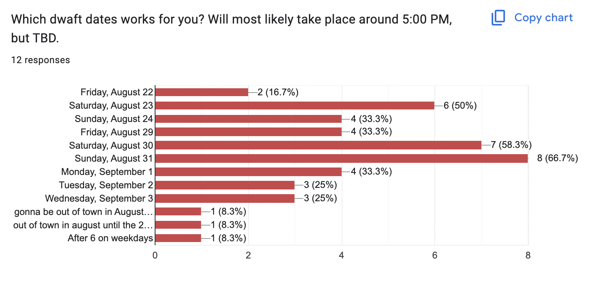
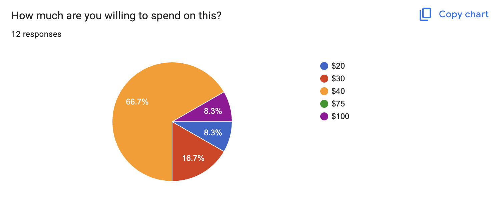
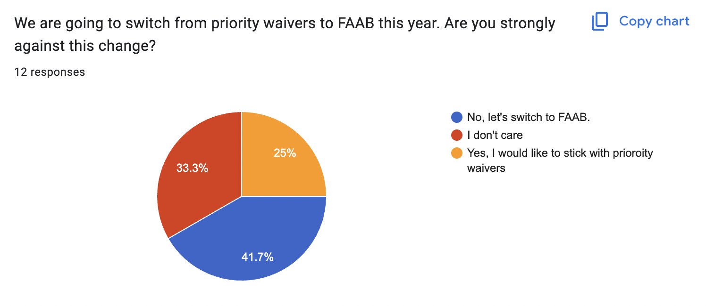
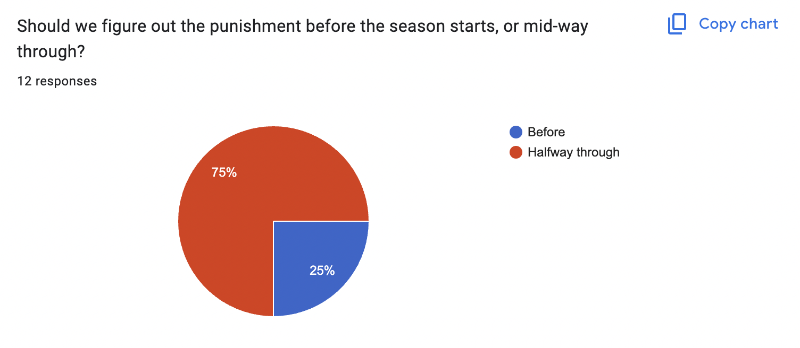
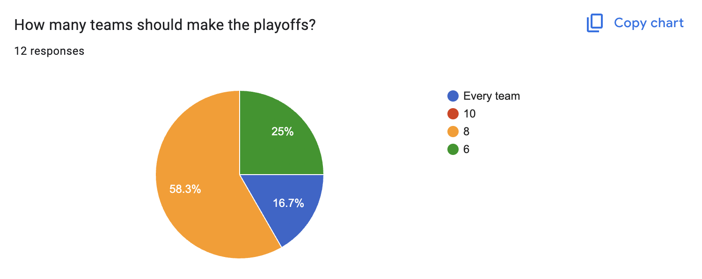
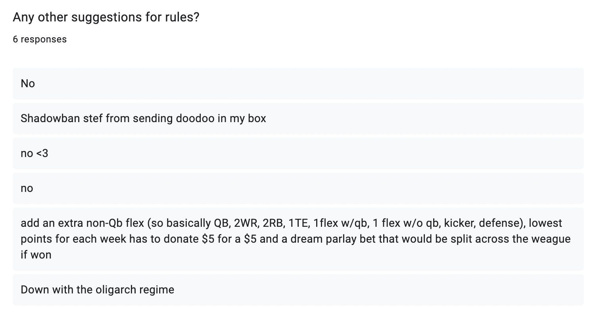
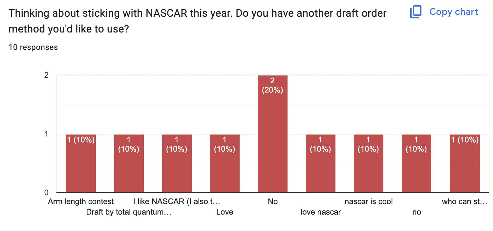

Your home for league specific information
Find links to surveys, information on dues, special rules, and more here.
2025 Survey Results
Dwaft Date
The league voted to dwaft on Sunday, August 31st. While not every member can make this date, it had the most votes, and I don't think it's worth it to do three more surveys just to land on the same anwser like last year. Please reach out if you really won't be able to be on a phone or computer at any point that day.
Dues
There will be a $40 buy-in this year, collected at the end of the season. Money will go to the 1st, 2nd and 3rd place winners, as well as most total points at the end of the regular season.
Waivers
This was a bit contentious, but 75% of members are either for or indifferent about switching from priority waivers to FAAB. This will be fun I promise!
Punishment
Punishment will still be established halfway through the season.
Playoffs
8 teams will make the playoffs again. Some wanted to return to everyone making it, some wanted only 6.
Suggestions
There were a few other suggestions. I liked the one to add an additional flex spot (non-QB) so we'll do that. Personally, I'm against allowing more than 3 QBs per team. On average, there are 28 starting QBs per week. If every team has 3 QBs, that's 36 QBs rostered - already more than the amount playing. I know you can only start 2 per week, but I just really want to avoide QB hoarding in a superflex league. Up to discuss.
Draft Order
It seemed like most people were into sticking with NASCAR. There were three other suggestions: an arm lenght contest, who can stay up the longest, and a measure of total quantum poundage. I do not want to count total poundage, so I think we'll stick with NASCAR. But, as always, up to discuss.
